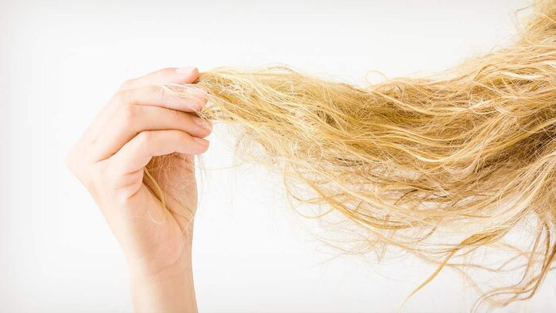

WHAT TO DO AND WHAT NOT TO DO WHEN YOU HAVE THIN AND BRITTLE HAIR
Our hair goes through a lot. From harsh chemicals to sizzling heat, you put your locks through a wringer. Hence, it shouldn’t be a surprise when it finally shows signs of breakage and damage. Although there are some causes of thin, brittle hair, which are in your control, it can also be due to your genetics, and if that is the case, then there is nothing you or your hairstylist can do about it.
However, you should find the root cause of thin, brittle hair to understand it better and find the right treatment for it. Here, we will learn some of the things you can do and not do to better care for your thin and brittle hair.
1. Washing
Your hair should be washed in intervals with a shampoo and conditioner that is specifically designed for damage control. Such conditioners are enriched with hair supporting ingredients like moisturizing oils, protein, and antioxidants that restore your locks’ strength and condition.
Also, when washing your hair, ensure that you use a conditioning mask. This might take up your time, but the moisturizing and reconditioning benefits it will give your mane will be worth the effort.
Avoid washing your hair daily as this can strip your hair of its natural oils, which keep your tresses naturally moisturized and well hydrated. If you have greasy hair, then invest in dry shampoo to space out your washes for longer.
If you don’t know the type of dry shampoo to get for your hair, you can try using baking soda as a DIY shampoo. It will absorb odor and remove grease. Also, refrain from using products that contain sulfates. Ensure that you read those labels before buying your shampoo or conditioner.
3. Styling
It can be difficult to style thin hair. Achieving a great style with thin hair can feel like an uphill task. A good haircut can make a difference in how your hair looks by removing the weight and adding some texture to it. However, no matter the type of style you use, keep it blunt when cutting it. Some of the styles you can go for include bobs, pixie crops, and collarbone style.
If you want to have voluminous hair, you can use hair extensions that work well on thin hair. Some of the best hair extensions which you can use are the halo extensions. These extensions don’t attach to your hair follicles; hence they don’t cause hair damage.
Additionally, avoid cutting your hair when it is dry. Instead, encourage your hairstylist to try cutting it when it is still wet.
Also, you should avoid using too many chemical processes and heat styling tools. When heat styling your hair is vital, you use a heat protector to create a protective barrier on your hair.
4. Drying
Maybe you’re used to getting out of the shower and rubbing your tresses with a towel. Well, it’s high time you stopped doing that. If you are a culprit of doing this, you might be exposing your strands to all sorts of hair breakage.
Instead, try using a microfiber towel or an old t-shirt to dry your mane gently. Drying your hair gently using an old t-shirt will prevent the hair follicle from being rough and, in return, reduce frizz. When your mane is wet, it becomes overly sensitive to any harsh treatment. Hence you must be careful with the types of materials it comes into contact with, including even your pillowcases.
Every woman wants to have strong, beautiful, and healthy locks. However, it takes both effort and time to maintain it. Treating thin, brittle hair is not something you can do in a day. Whether you got thin, brittle hair from genetics, or not taking proper care of your hair, it’s time to give your mane some TLC. Incorporate the tips mentioned above in your hair regimen, and you will have healthy, luscious locks in no time.